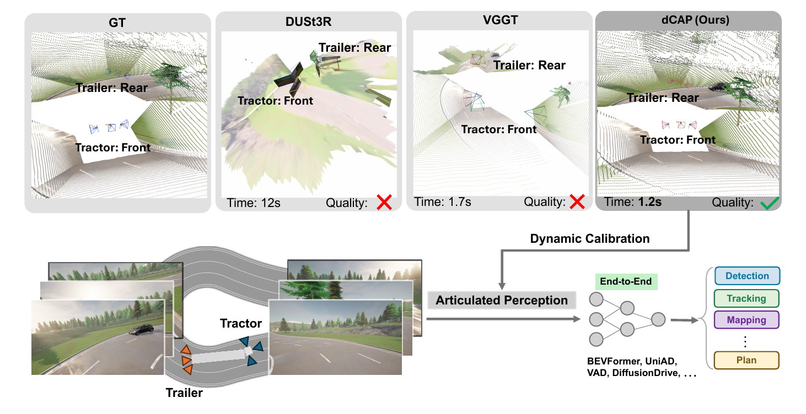
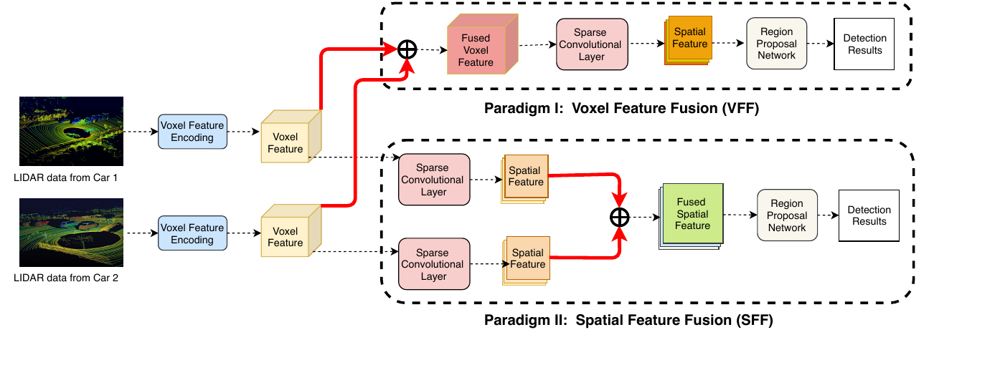

About
Qing Yang is an Associate Professor in the Department of Computer Science and Engineering at the University of North Texas (UNT). He received the Ph.D. degree in Computer Science from Auburn University in 2011, the M.E. degree in Computer Science from Harbin Institute of Technology in 2005, and the B.E. degree in Computer Science from Nankai University in 2003.
From 2011 to 2017, he was an Assistant Professor in the Department of Computer Science at Montana State University. He joined UNT as an Assistant Professor in 2017 and was promoted to Associate Professor in 2021. His research has been supported by the National Science Foundation, the U.S. Department of Energy, Toyota Motor North America, and the Army Research Laboratory.
News
- Sep 2026Selected as an Associate Editor of IEEE Transactions on Multimedia.
- Jun 2026Two papers accepted to CVPR 2026: “Mind the Hitch: Dynamic Calibration and Articulated Perception for Autonomous Trucks” and “F3DGS: Federated 3D Gaussian Splatting for Decentralized Multi-Agent World Modeling” (workshop).
- Jun 2026“M3CAD: Towards Generic Cooperative Autonomous Driving Benchmark” accepted to ICRA 2026.
- Feb 2026Served on the NSF review panel for the CISE Future CoRe-NeTS program.
- 2025Received the TAMEST Protégé Award from the Texas Academy of Medicine, Engineering, Science and Technology.
- 2025Recognized as one of the top 2% most-cited researchers worldwide.
- 2025Best Paper Award, International Symposium on Intelligent Computing and Networking.
Research
My current research centers on cooperative perception for connected and automated vehicles, vehicular edge computing, and privacy-preserving machine learning for intelligent transportation systems — spanning efficient multi-agent 3D perception, bandwidth-aware feature sharing, and trustworthy data sharing on the vehicular edge.
Featured Project
M³CAD: Multi-Vehicle, Multi-Task, Multi-Modality Cooperative Autonomous Driving Benchmark ICRA 2026
An open dataset for cooperative autonomous driving research: 204 sequences with 30K frames and 267K annotated instances, collected from 10–60 collaborating vehicles per sequence. Each vehicle carries six cameras, a 64-beam LiDAR, and GPS/IMU, with nuScenes-format annotations covering six tasks — object detection and tracking, mapping, motion forecasting, occupancy prediction, and path planning.
Demo: cooperative perception results on the M³CAD dataset.
dCAP: Dynamic Calibration and Articulated Perception for Autonomous Trucks CVPR 2026
Autonomous trucks are articulated at the fifth-wheel hitch, so camera extrinsics across the tractor-trailer rig change over time instead of staying fixed. dCAP is a vision-based framework that continuously estimates the 6-DoF relative pose between tractor and trailer cameras — with no static initialization required — enabling articulated-aware perception for end-to-end driving stacks. The project also releases STT4AT, a CARLA-based benchmark simulating semi-trailer trucks with synchronized multi-sensor suites.

dCAP vs. DUSt3R and VGGT on articulated tractor–trailer calibration (top); the articulated perception pipeline (bottom).
F-Cooper: Feature-Based Cooperative Perception for Autonomous Vehicle Edge Computing Using 3D Point Clouds Best Paper Award · SEC 2019
Sharing raw LiDAR data between vehicles costs about 4 MB per frame — far too much for real-time driving. F-Cooper instead shares compact CNN feature maps (as little as ~200 KB), fusing them across vehicles for 3D object detection. Feature fusion improves detection precision by ~10% within 20 meters and ~30% at longer ranges, with communication delays as low as 71 ms — making real-time cooperative perception on the vehicular edge practical.

The F-Cooper framework: two feature-fusion paradigms (VFF and SFF) for cooperative 3D object detection.
Selected Awards and Honors
- TAMEST Protégé Award, Texas Academy of Medicine, Engineering, Science and Technology, 2025
- Top 2% most-cited researchers worldwide, 2025
- Best Paper Runner-Up Award, IEEE International Conference on Mobility, Operations, Services and Technologies (MOST), 2025
- Best Paper Award, International Symposium on Intelligent Computing and Networking, 2025
- Best Paper Award, IEEE International Conference on E-health Networking, Application & Services (Healthcom), 2023
- PACCAR Distinguished Fellow, College of Engineering, UNT, 2022
- College of Engineering Research Award, UNT, 2021
- Best Paper Award, ACM/IEEE Symposium on Edge Computing (SEC), 2019
- IEEE Senior Member, 2017
Selected Publications
Selected Grants
- PI, Toyota Motor North America — “Cooperative Perception for Connected and Automated Vehicles,” 2022–2027
- PI, U.S. Department of Energy — “A Hybrid and Precise Cooperative Perception System for Connected Vehicles,” 2022–2025
- Co-PI, NSF IUCRC: Center for Electric, Connected and Autonomous Technologies for Mobility (eCAT), 2023–2028
- Co-PI, Army Research Laboratory — “Cognitive Distributed Sensing in Congested Radio Frequency Environments” (Phases I–III), 2023–2026
- PI, NSF — “Enabling Machine Learning based Cooperative Perception with mmWave Communication for Autonomous Vehicle Safety,” 2020–2023
- PI, NSF — “CyberTraining: Collaborative and Integrated Training on Connected and Autonomous Vehicles Cyber Infrastructure,” 2020–2023
Student Advising
Ph.D. Graduates
- Deyuan Qu (2025) — Toyota North America
- Sudip Dhakal (2024) — Florida Gulf Coast University
- Jingda Guo (2021) — HillStone Networks
- Qi Chen (2020) — Toyota North America
- Guangchi Liu (2017) — Southeastern University
Current Ph.D. Students
- Dominic Carrillo
- Michael Nutt
- Mohammad Dehghani Tezerjani
- Yongqi Zhu
- Yihao Zhu
- Morui Zhu
- Xu Gao
- Yongshuo Liu
Professional Service
- Area Editor, IEEE Internet of Things Journal, 2022 – present
- Editor, IEEE Transactions on Vehicular Technology, 2022 – present
- Editor, IEEE Transactions on Multimedia, 2022 – 2025
- Editor, IEEE Internet of Things Journal, 2017 – 2022
- Panelist and proposal reviewer, National Science Foundation (multiple programs)